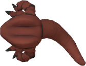
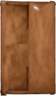
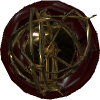
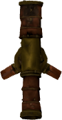

Spirit Strikers · look to the stars
Observatory Planner
Arrange the Victorian observatory from above like furniture on graph paper — then fall from the stars, down the copper shaft, and stand in the room you just drew.
Floor Plan
Drag real top-view sprites, aim the camera, check for collisions, and export the exact layout.js.




The Room in 3D
Every low-poly model placed straight from the plan. Scroll, swipe or press ↓ to descend; free-look once you land.
Enter the observatory →Model Cabinet
Spin every model on a turntable — size, triangles, materials and where it sits in the plan, side by side with its top view.
Browse the models →Original Intro
The first one-take cut: Signalscope → dome iris → shaft → room, with the coded desk and swivelling CRT.
Watch the pan →How the loop works
- Plan. Drag objects in
plan.html. Edits autosave as a draft in your browser. - Preview. Hit Preview in 3D —
scene.html?draft=1builds the room from the draft. - Commit. Copy or download
layout.jsintomodels/. That file is the single source of truth. - Hand it off. The format is flat and readable, so people and AI models can rearrange the room without touching 3D code.